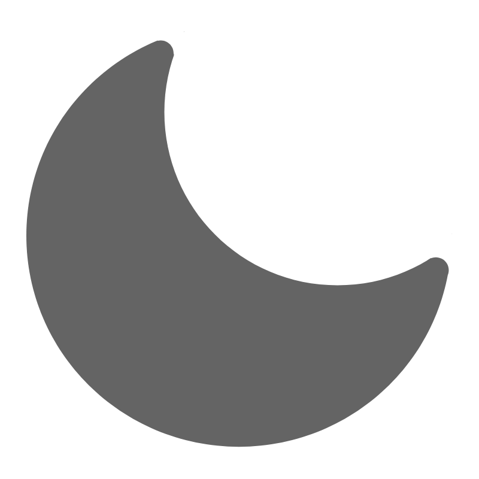

PROJECTS

Light
Dark
System
Go Back
2024
IDS Project
Emotions Detection ML (School)
RSS Reaser App
iPhone Note Taking App
This Website
Make The White Album A Single Album
News For Email
2023
Mining Game (Not Completed)
2022
School Website Project (School)
My GitHub